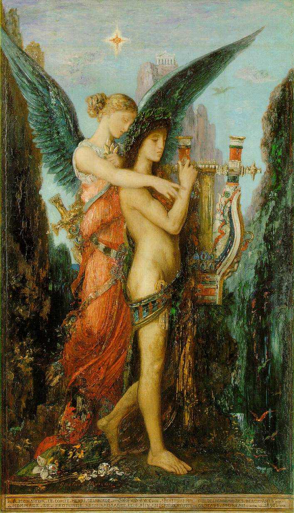
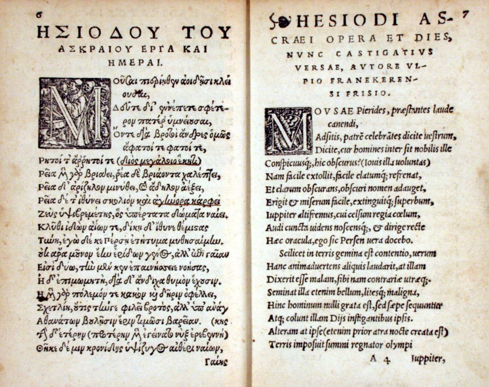

Гесиод — древнегреческий поэт, чьё творчество, наряду с поэмами Гомера, стало одним из столпов античной литературы. Если Гомер воспевал героическое прошлое и подвиги ахейцев, то Гесиод обратился к более приземлённым, но не менее важным темам: труду, справедливости, происхождению мира и места человека в нём. Традиционно его относят к VIII–VII векам до нашей эры, и он считается первым исторически достоверным поэтом Древней Греции, чья биография, в отличие от полулегендарного Гомера, имеет более конкретные очертания.

Гесиод и Муза. Картина Гюстава Моро, 1891. Музей Орсе
Гесиод родился в Беотии, в небольшом селении Аскра у подножия горы Геликон, которую он впоследствии прославил как обитель муз. Его отец, выходец из малоазийского города Кимы, переселился в Грецию и занялся земледелием, что во многом определило мировоззрение поэта. Сам Гесиод не был аристократом, как многие герои гомеровских поэм, а принадлежал к крестьянскому сословию, и это отразилось в его произведениях, наполненных практической мудростью и уважением к труду. Два главных произведения Гесиода — «Теогония» («Происхождение богов») и «Труды и дни» — стали важнейшими источниками по греческой мифологии и этике. «Теогония» представляет собой грандиозный космогонический эпос, в котором излагается история возникновения мира, смена поколений богов и установление власти Зевса. Этот труд систематизировал разрозненные мифологические предания и оказал огромное влияние на последующую античную традицию, включая таких авторов, как Пиндар и Овидий.
«Труды и дни» — это дидактическая поэма, написанная в форме наставлений Гесиода своему брату Персу, который, по словам поэта, несправедливо отсудил у него часть наследства. В ней Гесиод рассуждает о необходимости честного труда, осуждает несправедливость сильных мира сего и даёт практические советы по земледелию, мореплаванию и семейной жизни. Центральными идеями поэмы становятся понятия «дике» (справедливость) и «гибрис» (гордыня, ведущая к гибели). Особое место занимает миф о Пандоре и рассказ о пяти веках человечества (золотой, серебряный, медный, героический и железный), в котором Гесиод с горечью констатирует моральное падение современного ему общества.

Первая страница «Трудов и дней».